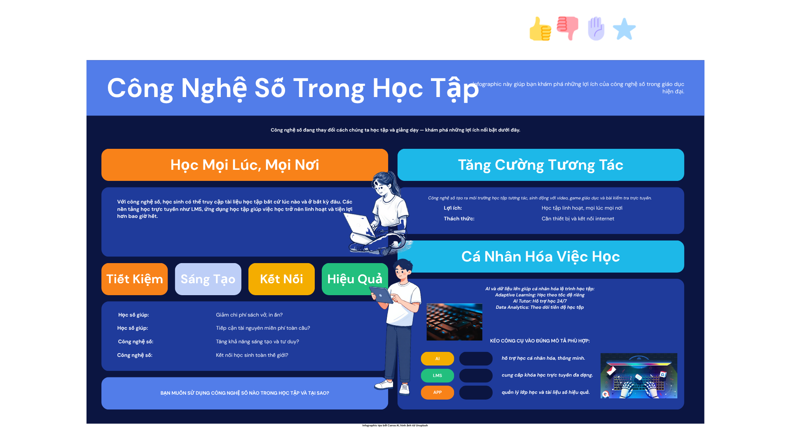

Bài báo cáo · Nhóm 10
Lợi ích của công nghệ số

Nguồn: Video tạo bởi CapCut, tài liệu từ Pexels/FreeSound, infographic được tạo bởi Canva AI và ảnh từ Unsplash.
Bài báo cáo · Nhóm 10

Nguồn: Video tạo bởi CapCut, tài liệu từ Pexels/FreeSound, infographic được tạo bởi Canva AI và ảnh từ Unsplash.